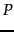

For a Markov chain to be ergodic, two technical conditions are required of its states and the non-zero transition probabilities; these conditions are known as irreducibility and aperiodicity. Informally, the first ensures that there is a sequence of transitions of non-zero probability from any state to any other, while the latter ensures that the states are not partitioned into sets such that all state transitions occur cyclically from one set to another.
Theorem.
For any ergodic Markov chain, there is a unique steady-state probability vector that is the principal left eigenvector of , such that if  is the number of visits to state in steps, then
is the number of visits to state in steps, then
| (254) |
It follows from Theorem 21.2.1 that the random walk with teleporting results in a unique distribution of steady-state probabilities over the states of the induced Markov chain. This steady-state probability for a state is the PageRank of the corresponding web page.